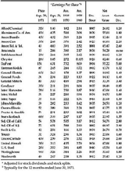
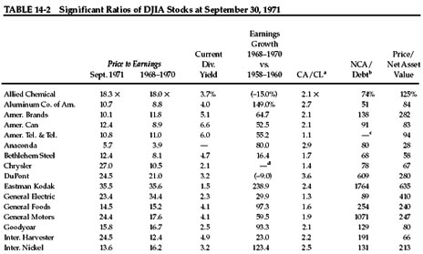
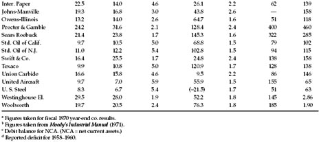
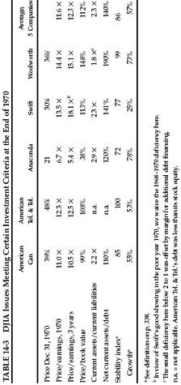
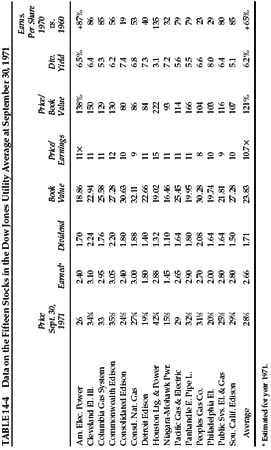
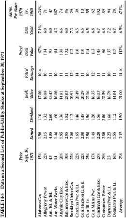
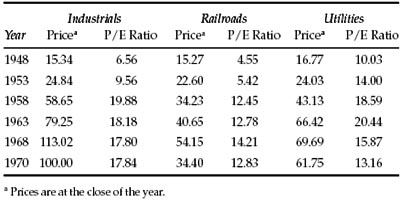
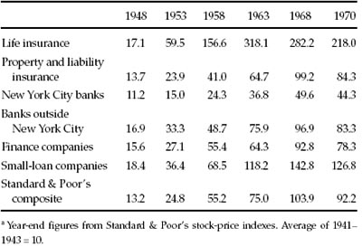

I t is time to turn to some broader applications of the techniques of security analysis. Since we have already described in general terms the investment policies recommended for our two categories of investors, * it would be logical for us now to indicate how security analysis comes into play in order to implement these policies. The defensive investor who follows our suggestions will purchase only high-grade bonds plus a diversified list of leading common stocks. He is to make sure that the price at which he bought the latter is not unduly high as judged by applicable standards.
In setting up this diversified list he has a choice of two approaches, the DJIA-type of portfolio and the quantitatively-tested portfolio. In the first he acquires a true cross-section sample of the leading issues, which will include both some favored growth companies, whose shares sell at especially high multipliers, and also less popular and less expensive enterprises. This could be done, most simply perhaps, by buying the same amounts of all thirty of the issues in the DowJones Industrial Average (DJIA). Ten shares of each, at the 900 level for the average, would cost an aggregate of about $16,000. 1 On the basis of the past record he might expect approximately the same future results by buying shares of several representative investment funds. †
His second choice would be to apply a set of standards to each purchase, to make sure that he obtains (1) a minimum of quality in the past performance and current financial position of the company, and also (2) a minimum of quantity in terms of earnings and assets per dollar of price. At the close of the previous chapter we listed seven such quality and quantity criteria suggested for the selection of specific common stocks. Let us describe them in order.
1. Adequate Size of the Enterprise
All our minimum figures must be arbitrary and especially in the matter of size required. Our idea is to exclude small companies which may be subject to more than average vicissitudes especially in the industrial field. (There are often good possibilities in such enterprises but we do not consider them suited to the needs of the defensive investor.) Let us use round amounts: not less than $100 million of annual sales for an industrial company and, not less than $50 million of total assets for a public utility.
2. A Sufficiently Strong Financial Condition
For industrial companies current assets should be at least twice current liabilities—a so-called two-to-one current ratio. Also, long-term debt should not exceed the net current assets (or “working capital”). For public utilities the debt should not exceed twice the stock equity (at book value).
3. Earnings Stability
Some earnings for the common stock in each of the past ten years.
4. Dividend Record
Uninterrupted payments for at least the past 20 years.
5. Earnings Growth
A minimum increase of at least one-third in per-share earnings in the past ten years using three-year averages at the beginning and end.
6. Moderate Price/Earnings Ratio
Current price should not be more than 15 times average earnings of the past three years.
7. Moderate Ratio of Price to Assets
Current price should not be more than 1½ times the book value last reported. However, a multiplier of earnings below 15 could justify a correspondingly higher multiplier of assets. As a rule of thumb we suggest that the product of the multiplier times the ratio of price to book value should not exceed 22.5. (This figure corresponds to 15 times earnings and 1½ times book value. It would admit an issue selling at only 9 times earnings and 2.5 times asset value, etc.)
GENERAL COMMENTS: These requirements are set up especially for the needs and the temperament of defensive investors. They will eliminate the great majority of common stocks as candidates for the portfolio, and in two opposite ways. On the one hand they will exclude companies that are (1) too small, (2) in relatively weak financial condition, (3) with a deficit stigma in their ten-year record, and (4) not having a long history of continuous dividends. Of these tests the most severe under recent financial conditions are those of financial strength. A considerable number of our large and formerly strongly entrenched enterprises have weakened their current ratio or overexpanded their debt, or both, in recent years.
Our last two criteria are exclusive in the opposite direction, by demanding more earnings and more assets per dollar of price than the popular issues will supply. This is by no means the standard viewpoint of financial analysts; in fact most will insist that even conservative investors should be prepared to pay generous prices for stocks of the choice companies. We have expounded our contrary view above; it rests largely on the absence of an adequate factor of safety when too large a portion of the price must depend on ever-increasing earnings in the future. The reader will have to decide this important question for himself—after weighing the arguments on both sides.
We have nonetheless opted for the inclusion of a modest requirement of growth over the past decade. Without it the typical company would show retrogression, at least in terms of profit per dollar of invested capital. There is no reason for the defensive investor to include such companies—though if the price is low enough they could qualify as bargain opportunities.
The suggested maximum figure of 15 times earnings might well result in a typical portfolio with an average multiplier of, say, 12 to 13 times. Note that in February 1972 American Tel. & Tel. sold at 11 times its three-year (and current) earnings, and Standard Oil of California at less than 10 times latest earnings. Our basic recommendation is that the stock portfolio, when acquired, should have an overall earnings/price ratio—the reverse of the P/E ratio—at least as high as the current high-grade bond rate. This would mean a P/E ratio no higher than 13.3 against an AA bond yield of 7.5%. *
Application of Our Criteria to the DJIA at the End of 1970
All of our suggested criteria were satisfied by the DJIA issues at the end of 1970, but two of them just barely. Here is a survey based on the closing price of 1970 and the relevant figures. (The basic data for each company are shown in Tables 14-1 and 14-2.)
TABLE 14-1 Basic Data on 30 Stocks in the Dow Jones Industrial Average at September 30, 1971



If, however, we wish to apply the same seven criteria to each individual company, we would find that only five of them would meet all our requirements. These would be: American Can, American Tel. & Tel., Anaconda, Swift, and Woolworth. The totals for these five appear in Table 14-3. Naturally they make a much better statistical showing than the DJIA as a whole, except in the past growth rate. 3
Our application of specific criteria to this select group of industrial stocks indicates that the number meeting every one of our tests will be a relatively small percentage of all listed industrial issues. We hazard the guess that about 100 issues of this sort could have been found in the Standard & Poor’s Stock Guide at the end of 1970, just about enough to provide the investor with a satisfactory range of personal choice. *
The Public-Utility “Solution”
If we turn now to the field of public-utility stocks we find a much more comfortable and inviting situation for the investor. † Here the vast majority of issues appear to be cut out, by their performance record and their price ratios, in accordance with the defensive investor’s needs as we judge them. We exclude one criterion from our tests of public-utility stocks—namely, the ratio of current assets to current liabilities. The working-capital factor takes care of itself in this industry as part of the continuous financing of its growth by sales of bonds and shares. We do require an adequate proportion of stock capital to debt. 4

In Table 14-4 we present a résumé of the 15 issues in the Dow Jones public-utility average. For comparison, Table 14-5 gives a similar picture of a random selection of fifteen other utilities taken from the New York Stock Exchange list.
As 1972 began the defensive investor could have had quite a wide choice of utility common stocks, each of which would have met our requirements for both performance and price. These companies offered him everything he had a right to demand from simply chosen common-stock investments. In comparison with prominent industrial companies as represented by the DJIA, they offered almost as good a record of past growth, plus smaller fluctuations in the annual figures—both at a lower price in relation to earnings and assets. The dividend return was significantly higher. The position of the utilities as regulated monopolies is assuredly more of an advantage than a disadvantage for the conservative investor. Under law they are entitled to charge rates sufficiently remunerative to attract the capital they need for their continuous expansion, and this implies adequate offsets to inflated costs. While the process of regulation has often been cumbersome and perhaps dilatory, it has not prevented the utilities from earning a fair return on their rising invested capital over many decades.


For the defensive investor the central appeal of the public-utility stocks at this time should be their availability at a moderate price in relation to book value. This means that he can ignore stockmarket considerations, if he wishes, and consider himself primarily as a part owner of well-established and well-earning businesses. The market quotations are always there for him to take advantage of when times are propitious—either for purchases at unusually attractive low levels, or for sales when their prices seem definitely too high.
The market record of the public-utility indexes—condensed in Table 14-6, along with those of other groups—indicates that there have been ample possibilities of profit in these investments in the past. While the rise has not been as great as in the industrial index, the individual utilities have shown more price stability in most periods than have other groups. * It is striking to observe in this table that the relative price/earnings ratios of the industrials and the utilities have changed places during the past two decades. These reversals will have more meaning for the active than for the passive investor. But they suggest that even defensive portfolios should be changed from time to time, especially if the securities purchased have an apparently excessive advance and can be replaced by issues much more reasonably priced. Alas! there will be capital-gains taxes to pay—which for the typical investor seems to be about the same as the Devil to pay. Our old ally, experience, tells us here that it is better to sell and pay the tax than not sell and repent.
TABLE 14-6 Development of Prices and Price/Earnings Ratios for Various Standard & Poor’s Averages,

Investing in Stocks of Financial Enterprises
A considerable variety of concerns may be ranged under the rubric of “financial companies.” These would include banks, insurance companies, savings and loan associations, credit and small-loan companies, mortgage companies, and “investment companies” (e.g., mutual funds). * It is characteristic of all these enterprises that they have a relatively small part of their assets in the form of material things—such as fixed assets and merchandise inventories—but on the other hand most categories have short-term obligations well in excess of their stock capital. The question of financial soundness is, therefore, more relevant here than in the case of the typical manufacturing or commercial enterprise. This, in turn, has given rise to various forms of regulation and supervision, with the design and general result of assuring against unsound financial practices.
Broadly speaking, the shares of financial concerns have produced investment results similar to those of other types of common shares. Table 14-7 shows price changes between 1948 and 1970 in six groups represented in the Standard & Poor’s stock-price indexes. The average for 1941–1943 is taken as 10, the base level. The year-end 1970 figures ranged between 44.3 for the 9 New York banks and 218 for the 11 life-insurance stocks. During the subintervals there was considerable variation in the respective price movements. For example, the New York City bank stocks did quite well between 1958 and 1968; conversely the spectacular life-insurance group actually lost ground between 1963 and 1968. These cross-movements are found in many, perhaps most, of the numerous industry groups in the Standard & Poor’s indexes.
TABLE 14-7 Relative Price Movements of Stocks of Various

We have no very helpful remarks to offer in this broad area of investment—other than to counsel that the same arithmetical standards for price in relation to earnings and book value be applied to the choice of companies in these groups as we have suggested for industrial and public-utility investments.
Railroad Issues
The railroad story is a far different one from that of the utilities. The carriers have suffered severely from a combination of severe competition and strict regulation. (Their labor-cost problem has of course been difficult as well, but that has not been confined to railroads.) Automobiles, buses, and airlines have drawn off most of their passenger business and left the rest highly unprofitable; the trucks have taken a good deal of their freight traffic. More than half of the railroad mileage of the country has been in bankruptcy (or “trusteeship”) at various times during the past 50 years.
But this half-century has not been all downhill for the carriers. There have been prosperous periods for the industry, especially the war years. Some of the lines have managed to maintain their earning power and their dividends despite the general difficulties.
The Standard & Poor’s index advanced sevenfold from the low of 1942 to the high of 1968, not much below the percentage gain in the public-utility index. The bankruptcy of the Penn Central Transportation Co., our most important railroad, in 1970 shocked the financial world. Only a year and two years previously the stock sold at close to the highest price level in its long history, and it had paid continuous dividends for more than 120 years! (On p. 423 below we present a brief analysis of this railroad to illustrate how a competent student could have detected the developing weaknesses in the company’s picture and counseled against ownership of its securities.) The market level of railroad shares as a whole was seriously affected by this financial disaster.
It is usually unsound to make blanket recommendations of whole classes of securities, and there are equal objections to broad condemnations. The record of railroad share prices in Table 14-6 shows that the group as a whole has often offered chances for a large profit. (But in our view the great advances were in themselves largely unwarranted.) Let us confine our suggestion to this: There is no compelling reason for the investor to own railroad shares; before he buys any he should make sure that he is getting so much value for his money that it would be unreasonable to look for something else instead. *
Selectivity for the Defensive Investor
Every investor would like his list to be better or more promising than the average. Hence the reader will ask whether, if he gets himself a competent adviser or security analyst, he should not be able to count on being supplied with an investment package of really superior merits. “After all,” he may say, “the rules you have outlined are pretty simple and easygoing. A highly trained analyst ought to be able to use all his skill and techniques to improve substantially on something as obvious as the Dow Jones list. If not, what good are all his statistics, calculations, and pontifical judgments?”
Suppose, as a practical test, we had asked a hundred security analysts to choose the “best” five stocks in the Dow Jones Average, to be bought at the end of 1970. Few would have come up with identical choices and many of the lists would have differed completely from each other.
This is not so surprising as it may at first appear. The underlying reason is that the current price of each prominent stock pretty well reflects the salient factors in its financial record plus the general opinion as to its future prospects. Hence the view of any analyst that one stock is a better buy than the rest must arise to a great extent from his personal partialities and expectations, or from the placing of his emphasis on one set of factors rather than on another in his work of evaluation. If all analysts were agreed that one particular stock was better than all the rest, that issue would quickly advance to a price which would offset all of its previous advantages. *
Our statement that the current price reflects both known facts and future expectations was intended to emphasize the double basis for market valuations. Corresponding with these two kinds of value elements are two basically different approaches to security analysis. To be sure, every competent analyst looks forward to the future rather than backward to the past, and he realizes that his work will prove good or bad depending on what will happen and not on what has happened. Nevertheless, the future itself can be approached in two different ways, which may be called the way of prediction (or projection) and the way of protection. *
Those who emphasize prediction will endeavor to anticipate fairly accurately just what the company will accomplish in future years—in particular whether earnings will show pronounced and persistent growth. These conclusions may be based on a very careful study of such factors as supply and demand in the industry—or volume, price, and costs—or else they may be derived from a rather naïve projection of the line of past growth into the future. If these authorities are convinced that the fairly long-term prospects are unusually favorable, they will almost always recommend the stock for purchase without paying too much regard to the level at which it is selling. Such, for example, was the general attitude with respect to the air-transport stocks—an attitude that persisted for many years despite the distressingly bad results often shown after 1946. In the Introduction we have commented on the disparity between the strong price action and the relatively disappointing earnings record of this industry.
By contrast, those who emphasize protection are always especially concerned with the price of the issue at the time of study. Their main effort is to assure themselves of a substantial margin of indicated present value above the market price—which margin could absorb unfavorable developments in the future. Generally speaking, therefore, it is not so necessary for them to be enthusiastic over the company’s long-run prospects as it is to be reasonably confident that the enterprise will get along.
The first, or predictive, approach could also be called the qualitative approach, since it emphasizes prospects, management, and other nonmeasurable, albeit highly important, factors that go under the heading of quality. The second, or protective, approach may be called the quantitative or statistical approach, since it emphasizes the measurable relationships between selling price and earnings, assets, dividends, and so forth. Incidentally, the quantitative method is really an extension—into the field of common stocks—of the viewpoint that security analysis has found to be sound in the selection of bonds and preferred stocks for investment.
In our own attitude and professional work we were always committed to the quantitative approach. From the first we wanted to make sure that we were getting ample value for our money in concrete, demonstrable terms. We were not willing to accept the prospects and promises of the future as compensation for a lack of sufficient value in hand. This has by no means been the standard viewpoint among investment authorities; in fact, the majority would probably subscribe to the view that prospects, quality of management, other intangibles, and “the human factor” far outweigh the indications supplied by any study of the past record, the balance sheet, and all the other cold figures.
Thus this matter of choosing the “best” stocks is at bottom a highly controversial one. Our advice to the defensive investor is that he let it alone. Let him emphasize diversification more than individual selection. Incidentally, the universally accepted idea of diversification is, in part at least, the negation of the ambitious pretensions of selectivity. If one could select the best stocks unerringly, one would only lose by diversifying. Yet within the limits of the four most general rules of common-stock selection suggested for the defensive investor (on pp. 114–115) there is room for a rather considerable freedom of preference. At the worst the indulgence of such preferences should do no harm; beyond that, it may add something worthwhile to the results. With the increasing impact of technological developments on long-term corporate results, the investor cannot leave them out of his calculations. Here, as elsewhere, he must seek a mean between neglect and overemphasis.